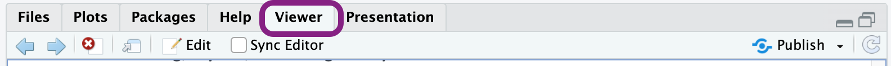
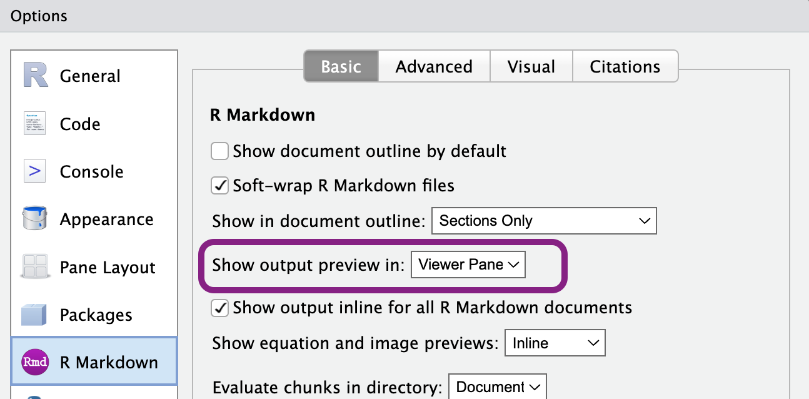

flowchart LR
A[Hard edge] --> B(Round edge)
B --> C{Decision}
C --> D[Result one]
C --> E[Result two]
Writing Techncial Documentation for CLMS
Editor Manual
Keywords
documentationworkflow, documentation project, documentation creation, documentation quarto, project doc, docx quarto, clms documents, project folder, document manual, documentation copernicus
Introduction
This manual guides users through creating technical documentation for the Copernicus Land Monitoring Service using Quarto. Quarto simplifies the process of writing professional documents in Markdown, converting them into HTML and PDF for nice publishing. The manual covers basic Markdown writing, document rendering, as well a the review, and publication process of technical CLMS documents. It also describes the project folder structure, template usage, and common mistakes to avoid.
You don’t need to be a programmer nor an expert to use Quarto. If you’ve ever written a document in Microsoft Word, you’ll be able to use Quarto with a bit of practice.
Folder and File Structure
In this section, we explain how the documentation project is organized and where you should put your files. This structure helps keep everything clean, consistent, and easy to work with — especially when multiple people are involved.
Below is a typical folder layout for the project:
project-root-doc/
├── src/
│ ├── templates/
│ │ ├── CLMS_ATBD_Template.qmd
│ │ └── CLMS_PUM_Template.qmd
│ ├── styles/
│ | ├── reference.docx
│ | └── custom.scss
| └── products/
| ├── my-doc.qmd
| └── my-doc-media
| └── image1.png
├── scripts/
├── macros/
└── metadata/Folder Descriptions
src/
This is the main source folder. It contains all the shared resources used when creating documentation.src/templates/
This is where you’ll find ready-to-use.qmdtemplates. There are templates for two document types:- ATBD (Algorithm Theoretical Basis Document)
- PUM (Product User Manual)
When you start a new document, you will copy the appropriate template from here.
src/styles/
This folder contains style-related files, such as DOCX templates and style sheets. These are used by scripts and macros to give your documents a consistent look.src/products/
This is the folder where you will actually create and edit your documentation.For each new document, create a new
.qmdfile insidesrc/products/, for example:my-doc.qmd.Also create a separate folder to store images and charts used in that document, for example:
my-doc-media/.Both the
.qmdfile and the media folder should follow a clear naming pattern (e.g. same prefix) to keep things organized.Example:
products/ ├── my-doc.qmd └── my-doc-media/ └── image1.png
scripts/,macros/, andmetadata/
These folders support the automation workflow. They include scripts, macros, and configuration files that help with rendering and styling your documents.
By following this structure, everyone on the team will know exactly where to find templates, styles, and finished documents — and where to put new content.
Basic Markdown Syntax
Note
In addition to this guide and the official documentation, you can also explore the template .qmd files in the src/templates folder. These files include real examples of how to structure documents using Markdown and Quarto-specific syntax. They’re a great reference when you’re not sure how to format something.
Markdown is a simple way to format text using plain characters — no need for complicated tools or buttons. Quarto uses Markdown to let you write clean, readable documents that can be turned into HTML or PDF automatically.
This section shows the most useful Markdown elements you’ll need when writing documentation. If you want to explore more, visit the official Quarto Markdown guide.
Headings
Use the # symbol to create headings and organize your content. More # means a smaller heading level:
# Title (Level 1)
## Section (Level 2)
### Subsection (Level 3)Paragraphs and Line Breaks
Just write text normally to create a paragraph. Leave an empty line between paragraphs.
To create a line break inside a paragraph, end the line with two spaces:
This is one line.
This is another line.Bold and Italic Text
- Italic — use one asterisk or underscore:
*italic*or_italic_
- Bold — use two asterisks:
**bold**
- Bold and italic — use three asterisks:
***bold and italic***
Lists
Bullet (Unordered) List
- Item one
- Item two
- SubitemNumbered (Ordered) List
1. First step
2. Second step
1. Sub-stepLinks and Images
Link
[Quarto website](https://quarto.org)Image
Place image files in your media/ folder, and use:
Code Blocks and Inline Code
Inline code
Use backticks (`) to highlight short code inside a sentence:
Use the `render` button to build your document.Rendered result:
Use the render button to build your document.
Code block
Use triple backticks for larger code examples:
```python
print("Hello, world!")
```Rendered result:
print("Hello, world!")You can replace python with other languages like bash, r, or json.
Tables
Tables are a great way to present structured information. Below are two common ways to create them, along with rendered previews.
Simple (Pipe) Table
| Name | Role | Status |
|------------|------------|----------|
| Alice | Developer | Active |
| Bob | Reviewer | Pending |Rendered result:
| Name | Role | Status |
|---|---|---|
| Alice | Developer | Active |
| Bob | Reviewer | Pending |
Make sure to align columns using | and -.
HTML-style Table (for advanced layouts)
```{=html}
<table style="border-collapse: collapse; width: 100%; font-size: 14px;">
<thead style="background-color: #2c3e50; color: black;">
<tr>
<th colspan="3" style="padding: 10px; border: 1px solid #ccc; text-align: center;">
Document Workflow Overview
</th>
</tr>
<tr>
<th style="padding: 8px; border: 1px solid #ccc;">Step</th>
<th style="padding: 8px; border: 1px solid #ccc;">Task</th>
<th style="padding: 8px; border: 1px solid #ccc;">Details</th>
</tr>
</thead>
<tbody style="background-color: #ecf0f1;">
<tr>
<td style="padding: 8px; border: 1px solid #ccc;">1</td>
<td style="padding: 8px; border: 1px solid #ccc;">Initialize Project</td>
<td style="padding: 8px; border: 1px solid #ccc;">Set up folder structure and copy base template</td>
</tr>
<tr>
<td style="padding: 8px; border: 1px solid #ccc;">2</td>
<td colspan="2" style="padding: 8px; border: 1px solid #ccc;">Create and configure `.qmd` file</td>
</tr>
<tr>
<td style="padding: 8px; border: 1px solid #ccc;">3</td>
<td style="padding: 8px; border: 1px solid #ccc;">Write Content</td>
<td style="padding: 8px; border: 1px solid #ccc;">
Add sections, insert media, and apply styles.<br>
Use templates to ensure structure consistency.
</td>
</tr>
<tr>
<td style="padding: 8px; border: 1px solid #ccc;">4</td>
<td style="padding: 8px; border: 1px solid #ccc;">Render Output</td>
<td style="padding: 8px; border: 1px solid #ccc;">
<ul style="margin: 0; padding-left: 20px;">
<li>HTML for preview</li>
<li>DOCX for formatting check</li>
<li>PDF via automation</li>
</ul>
</td>
</tr>
<tr>
<td colspan="3" style="padding: 8px; border: 1px solid #ccc; background-color: #d1ecf1; text-align: center;">
✅ All steps completed — document ready for review
</td>
</tr>
</tbody>
</table>Rendered result:
| Document Workflow Overview | ||
|---|---|---|
| Step | Task | Details |
| 1 | Initialize Project | Set up folder structure and copy base template |
| 2 | Create and configure `.qmd` file | |
| 3 | Write Content | Add sections, insert media, and apply styles. Use templates to ensure structure consistency. |
| 4 | Render Output |
|
| ✅ All steps completed — document ready for review | ||
Warning
Avoid using nested tables (a table inside another table) when writing documentation intended for DOCX or PDF output. While this might work in HTML, it often causes serious rendering problems in Word or during PDF conversion — such as layout breakage, invisible borders, or unreadable formatting.
✅ Instead of nesting:
- Reorganize the content into a simpler layout
- Split one large complex table into two or more smaller tables placed one after another
This ensures your document remains clean, readable, and properly formatted across all output formats.
Figures (with captions and layout)
You can add figures using this special block format:
::: {.figure}

A short caption for the figure.
:::You can also use layout options, like fig-align="center" or fig-width="80%" in advanced cases.
More: https://quarto.org/docs/authoring/figures.html
Equations
Quarto supports mathematical equations using LaTeX-style syntax. You can add inline equations or display equations as blocks.
Inline Equations
Use single dollar signs $...$ for inline math:
The formula for the area is $A = \pi r^2$.Rendered result:
The formula for the area is \(A = \pi r^2\).
Display Equations
Use double dollar signs $$...$$ to show a larger, centered equation block:
$$
E = mc^2
$$Rendered result:
\[ E = mc^2 \]
You can use most standard LaTeX math symbols and operators.
For more examples, check the Quarto math documentation.
Diagrams
Quarto supports diagrams using mermaid and dot. Just use a code block like this:
Mermaid example
```{mermaid}
flowchart LR
A[Hard edge] --> B(Round edge)
B --> C{Decision}
C --> D[Result one]
C --> E[Result two]
```Dot example
```{dot}
digraph DocumentationWorkflow {
node [shape=box, style=rounded]
Start -> "Create .qmd File"
"Create .qmd File" -> "Write Content"
"Write Content" -> "Render to HTML"
"Write Content" -> "Render to DOCX"
"Render to DOCX" -> "Convert to PDF"
"Render to HTML" -> Review
"Convert to PDF" -> Review
Review -> "Push to GitHub"
"Push to GitHub" -> Done
Done [shape=ellipse, style=filled, fillcolor=lightgrey]
}
```Footnotes
You can add footnotes to explain details without interrupting the main text. Use [^1] where you want the footnote, and define the footnote at the bottom:
This is a sentence with a footnote.[^1]
[^1]: This is the footnote content.Rendered result:
This is a sentence with a footnote.1
Notebook Output Embeds
If you’re working with code notebooks (like Jupyter or R Markdown), you can include outputs such as plots or tables directly in the document. Quarto will automatically embed them after the code block.
Creating New Documentation
Creating a new document is simple when you follow a clear workflow. You can either start from a ready-made template or create a file from scratch.
Step 1: Start a New File
There are two ways to begin:
Option 1: Use a Template
- Open the
src/templates/folder. - Choose the right template:
CLMS_ATBD_Template.qmdfor an Algorithm Theoretical Basis Document (ATBD)CLMS_PUM_Template.qmdfor a Product User Manual (PUM)
- Copy the template into the
src/products/folder. - Rename it to match your new document. Example:
my-product.qmd - Create a new media folder named
my-product-media/next to it to store images and charts.
Option 2: Create from scratch
- Inside the
src/products/folder, create a new file: e.g.my-product.qmd - Create a new media folder named
my-product-media/for related images and figures.
💡 Using templates is recommended because they include structure and helpful comments. But starting from scratch gives you full control.
Step 2: Understand and Use the Template
Templates include:
- A pre-filled YAML header (the part at the top with
---) - Required sections and headings
- Helpful comments you should keep while editing
💡 If you use an already defined template, the YAML header is included — you don’t need to add it manually.
Step 3: Add or Adjust the YAML Header
If you’re creating the .qmd file from scratch, you must add the basic YAML header at the top of your file.
These fields are required for correct rendering:
metadata-files: connects your document to shared metadata (like author, institution, version)format: controls how your document is rendered (HTML, styled DOCX, etc.)
Important
You must include the pdf: default format in the YAML header.
Although PDF is not rendered directly during this step, defining it here ensures compatibility with the automated rendering workflow later. Details are explained in the Rendering Documentation section.
You must adjust reference-doc: under the html: format to specify the default style used for the DOCX/PDF output.
Here’s a basic header you can use:
---
title: "Product SHORT NAME"
subtitle: "Product full name"
date: "2022-10-06"
version: 1.0
product-name: Product Name
description: "Product DESCRIPTION"
metadata-files:
- ../../metadata/default.yml
format:
html: default
pdf: default
docx:
reference-doc: ../styles/template-atbd.docx
hidden: true
---Ready-Made QMD Templates
To make documentation creation easier and more consistent, you can start your work from ready-made .qmd template files. These templates include the correct structure, required sections, and helpful comments to guide your editing.
Templates are stored in the src/templates/ directory. Currently, two types of templates are provided:
ATBD Template
Filename: CLMS_ATBD_Template.qmd
This template is used for creating an Algorithm Theoretical Basis Document (ATBD).
It includes:
- A structured outline based on standard ATBD requirements
- Placeholder sections for theory, algorithm descriptions, validation, and references
- YAML metadata pre-filled with necessary fields and style settings
- Commented guidance within each section
💡 Use this template when documenting the scientific or technical foundation of a data product.
PUM Template
Filename: CLMS_PUM_Template.qmd
This template is used for creating a Product User Manual (PUM).
It includes:
- Sections for product overview, data access, interpretation, and use
- Notes on where to insert images, tables, and figures
- YAML header configured for standard rendering
💡 Use this template when documenting how users should interact with or interpret a product.
How to Use the Templates
- Go to
src/templates/ - Choose either
CLMS_ATBD_Template.qmdorCLMS_PUM_Template.qmd - Copy the file into the
src/products/folder - Rename it to match your project (e.g.
my-product.qmd) - Begin editing based on the guidance in the template
If you’re unsure which template to use, ask your team lead or check what was used in previous similar documents.
Important
Do not modify the structure of the template unless absolutely necessary.
Keeping the structure consistent across all documents ensures that the documentation system stays clear, professional, and easy to navigate for all users and reviewers.
Using Pandoc to Convert DOCX to QMD
When translating existing documents from Word (.docx) into Quarto Markdown (.qmd), you can use Pandoc to quickly generate a base file. This can save time by preserving text structure, headings, and even tables — though the result will still need cleanup.
What is Pandoc?
Pandoc is a powerful command-line tool that can convert documents between various formats, including Markdown, DOCX, HTML, LaTeX, and more.
To use Pandoc on your computer, download and install it from the official site: https://pandoc.org/installing.html
When and How to Use It
Use Pandoc only for converting existing .docx documents into .qmd. Do not use it to convert PDFs — Pandoc does not support PDF as an input format. This approach is ideal when you’re:
- Migrating legacy documentation into the Quarto system
- Creating a quick starting point for manual cleanup
- Extracting embedded images and figures from
.docx
Basic Usage Example
Open a terminal or command prompt — ideally from within RStudio’s Terminal tab so you can stay in one environment — and run the following command. You can provide either a relative or full path to the .docx file:
$ pandoc my-doc.docx -o my-doc.qmd --wrap=none --from=docx --to=markdown+fenced_divs+grid_tables+pipe_tables+smartWhat this command does:
my-doc.docx: The input Word document.-o my-doc.qmd: Output file in Markdown format.--wrap=none: Prevents Pandoc from breaking long lines into multiple lines.--from=docx: Specifies that the input file is a Word document.--to=markdown+fenced_divs+grid_tables+pipe_tables+smart: Sets output format and enables enhanced table and layout options.
Where Are Media Files Stored?
When Pandoc finds images or other media in the .docx file, it extracts them automatically into a new folder.
By default, extracted media will be placed into a subfolder named media/, located next to your output .qmd file.
This is created automatically and will contain all image assets referenced in the converted file.
Changing the Media Folder Name
You can change the default media folder name using the --extract-media option:
$ pandoc my-doc.docx -o my-doc.qmd --extract-media=custom-media-folder
Note
Pandoc will create a media/ subfolder inside the folder you specify. For example, running the above command will result in:
custom-media-folder/media/If you want to follow the structure expected by your project (e.g. my-doc-media/), make sure to move the contents out of that inner media/ folder and place them in the right location manually.
Next Steps
After conversion, you’ll likely need to:
- Clean up unnecessary styles or extra spacing
- Rename and organize media files
- Add a proper YAML header at the top of the
.qmdfile - Restructure the content to match your template or documentation style
While not perfect, this method gives you a solid starting point — especially for long or complex documents.
Default Styles and Options
To make documentation look consistent and professional, we use a set of predefined styles and settings. These are applied automatically when you render your .qmd files, so you don’t need to worry about design details — just focus on the content.
Theme
It ensures that all documents have a clean, modern, and consistent appearance — both in HTML and PDF output.
This theme is applied automatically. You do not need to configure it manually in your documents.
Table of Contents
The table of contents (TOC) is enabled by default and appears on the left-hand side in HTML documents.
You can control how many heading levels are shown by adjusting toc-depth in your YAML header, though the default setting (toc-depth: 3) is usually enough.
Customizing Per-Document Settings
If needed, you can override the default styles or add extra options in your document’s YAML header. For example:
format:
html:
toc: true
toc-depth: 3
docx:
reference-doc: ../src/styles/custom-reference.docx
pdf: defaultAutomatic Keywords Generation
You do not need to manually add keywords to your document’s metadata. The system is designed to handle this automatically using AI during the publishing workflow.
How It Works
- The default Quarto metadata configuration automatically injects a special placeholder value into the
keywords:field in your document’s header. - When your document is rendered and processed for publication, an AI service analyzes its content and automatically generates 10 relevant keywords.
- These keywords help with document indexing, search, and classification on the publication platform.
This process ensures consistent keyword formatting and reduces the work required from authors.
What You Should Do
Nothing!
Simply leave the keywords: field untouched or omit it entirely. The publishing system will take care of it for you.
If you do add custom keywords for internal purposes, they will be overwritten during the publishing step — so it’s best to let the system manage them.
Using RStudio with Quarto
RStudio is the recommended tool for working with .qmd (Quarto Markdown) files. It provides a simple, user-friendly interface for writing, editing, and rendering documentation.
You don’t need to know R to use RStudio — we only use it here as a Markdown editor with rendering features.
Opening Your Project
- Open RStudio.
- Use File > Open Project… and select the root folder of the Technical Library.
- Navigate to the
src/products/folder. - Open the
.qmdfile you want to edit.
Editing QMD Files
You can edit .qmd files just like regular text documents. RStudio provides:
- Syntax highlighting for Markdown and code blocks
- A live preview of rendered output
- Auto-saving and formatting support
- Instant feedback when rendering errors occur
Use the Preview on Save option (checkbox in the toolbar) to automatically render your file every time you save it. This makes editing more efficient.
Managing Media Files
If your document uses images or diagrams:
- Place them in a dedicated media folder (e.g.
my-doc-media/) - Use relative paths in your
.qmdfile, like:
Rendering Documentation
Once your .qmd file is ready, the next step is to render it — this means turning it into a final document that can be viewed and shared. Quarto supports multiple output formats, but in our workflow, we focus on two: HTML and PDF.
You can render your documentation directly in RStudio or using command-line tools, depending on what you prefer. Both options work the same way and produce identical results — choose the one that fits your workflow best.
Render to HTML
HTML is the default output format and is useful for previewing your document in a web browser while you work. Rendered HTML uses the custom Technical Library theme and includes a table of contents, clickable navigation, and consistent styles. It’s a great way to check formatting, layout, and images as you write.
There are two ways to preview your .qmd file:
Click the Render button at the top of the RStudio window.

Or enable Preview on Save (in the RStudio IDE toolbar). This option automatically re-renders your document every time you save it.

After clicking the Render button (or saving the file with Preview on Save enabled), the HTML version of your document will appear in the Viewer tab, located in the Output pane (typically in the lower right corner of RStudio).

If the Viewer tab is not visible:
- Go to Tools > Global Options in the top menu.
- Navigate to the R Markdown section.
- Ensure that Show output preview in: is set to Viewer Pane.

This setting ensures that rendered documents are displayed within RStudio, providing a seamless preview experience.
Render to PDF via DOCX and LibreOffice
PDFs are not generated directly from Quarto. Instead, the process involves a few automatic steps:
- Quarto first generates a
.docx(Word) file using the styles and settings defined in the YAML header and shared config files. - Then, a LibreOffice macro automatically converts the
.docxto.pdf. - The resulting PDF file is saved in the output location.
This approach ensures consistent and well-formatted PDFs, even across different systems.
Important
- Make sure
pdf: defaultis included in your YAML header — this triggers the PDF pipeline. - Do not define custom
pdf:options unless you know what you’re doing.
Preview with DOCX Instead of PDF
Instead of manually generating a PDF (which involves running scripts or waiting for the automated conversion), you can simply render a .docx file. It will look almost exactly like the final PDF because it uses the same styles and layout rules.
This is a great option when you want to quickly check how your document will look in PDF format — especially while you’re still editing the .qmd file.
By default, RStudio renders the first format listed in the format section of the YAML header. Usually this is html. If you want to preview the DOCX version instead, just move the docx: format to the top of the list in the header.
For example:
format:
html: default
docx:
reference-doc: ../src/styles/reference.docx
pdf: defaultChange to:
format:
docx:
reference-doc: ../src/styles/reference.docx
html: default
pdf: defaultThen click Render — RStudio will generate and open the .docx file for you.
Output Location
When you render a single .qmd file locally (e.g. using RStudio or the command line), the output (HTML or DOCX/PDF) is saved next to your source file — usually inside the src/products/ folder.
If you run the full command:
$ quarto renderthen Quarto will build the entire Technical Library and save the results in a special _site folder. However, this is typically handled automatically by the rendering workflow in the GitHub repository during the publishing process.
💡 You do not need to render the entire library yourself. Just focus on rendering the file you are currently working on. This keeps things faster and easier to manage during editing.
Problems and Solutions
This chapter describes common problems you might face while editing .qmd files and rendering documentation — along with practical solutions and best practices. These issues are based on real experience working with the templates and rendering workflow.
Text Styling in DOCX
Problem
You want to style or color specific parts of text in the final document, such as bolding only part of a sentence or changing its color.
Solution
Use a custom character style from the template DOCX file. For example:
[**AD**]{custom-style="BoldRowText"}This style (BoldRowText) is already defined in the template.docx file.
Note
If you’re adding a new style to the .docx reference file, make sure it’s a character style so it works correctly when applied inline in .qmd files. Custom styles must always be defined as character styles — not paragraph styles. Using the wrong type can cause formatting issues across the entire document.
Figure and Image Numbering
Problem
Figures and images inserted into .qmd files do not automatically include numbers in the rendered DOCX or PDF file.
Workaround
You can use figure referencing like this:
{{#fig-3 height=356px}}However, this approach wraps the image in a table structure, which might cause visible borders or layout issues — especially if your styling is strict or minimal.
Best Practice
For clean results:
- Add a manual figure number and title directly as text under the image.
- Avoid using automatic figure references unless necessary for cross-referencing.
Example:

**Figure 3.** Data processing flow chart.Table Styling and Formatting
Problem
Only one table style is applied to all tables via the DOCX template, and additional formatting — like emphasizing specific rows — isn’t applied automatically.
Solution
Use a custom character style (like BoldRowText) within cells that require special formatting.
[**MRVPP**]{custom-style="BoldRowText"}This will bold specific text while keeping the rest of the table structure intact.
Best Practice
- Do not change the table structure or layout in the DOCX file manually.
- Always apply row or cell formatting by using inline styled text directly in the
.qmdsource.
💡 If you need to format a row differently (e.g. a header row within the body of the table), apply the style inline using the method above.
More issues will be added here as the system and workflow evolve. If you encounter a formatting issue or rendering problem that isn’t listed, ask your team lead or check how other documents handled similar cases.
Document Review and Git Workflow
Pushing Changes to Git
TODO
Reviewing Documents
TODO
Footnotes
This is the footnote content.↩︎